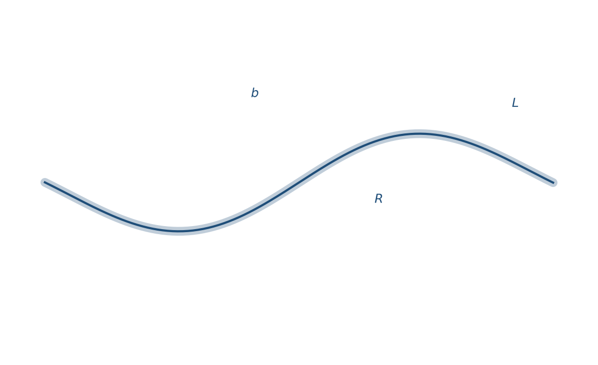
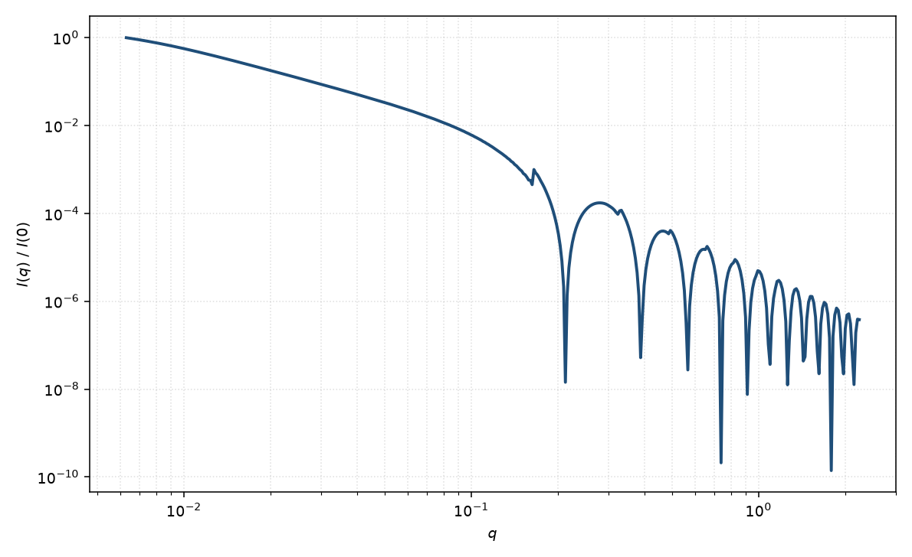

柔性圆柱
flexible cylinder
适用场景
半柔性蠕虫状链：轮廓长度 $L$、Kuhn 长度 $b$（或持久长度 $\ell_p=b/2$）、圆形截面半径 $R$。适用于蠕虫状胶束、半刚性聚电解质、以及既有 $q^{-1}$ 棒区又有低 $q$ 线圈 Guinier 的聚合物。
$L/b\gg 1$ 时低 $q$ 像高斯链，$q\ell_p\sim 1$ 附近过渡到棒的 $q^{-1}$，更高 $q$ 由截面 $J_1$ 控制。完全刚性（$b\to L$）回到直圆柱；完全柔性且忽略截面时接近排除体积链。
物理图像
Pedersen 与 Schurtenberger 把 Kratky–Porod 蠕虫链的散射函数与圆柱截面因子相乘（在解耦近似下），并给出有/无排除体积的数值插值。链的 $R_g$ 用 Benoit–Doty 公式由 $L$ 与 $b$ 计算，而不是当作独立参数。
排除体积在低 $q$ 把斜率从 Debye 的 $q^{-2}$ 推向约 $q^{-1.7}$；稀溶液短链上该修正常可忽略。
示意图


核心公式
解耦近似（截面相对链构象）
$$P(q)\simeq P_{\mathrm{wp}}(q;L,b)\,P_{\mathrm{cs}}(qR),\qquad P_{\mathrm{cs}}(x)=\left[\frac{2J_1(x)}{x}\right]^2.$$蠕虫链回转半径（Benoit–Doty）
$$R_g^2=\frac{Lb}{6}\left[1-\frac{3}{2n_b}+\frac{3}{n_b^2}-\frac{3}{2n_b^3}(1-\mathrm{e}^{-2n_b})\right],\quad n_b=L/b.$$$P_{\mathrm{wp}}$ 在小 $q$ 回到 Guinier，中间过渡到细棒极限。排除体积用 Pedersen–Schurtenberger 的数值表或等价插值。
参数表
| 参数 | 符号 | 含义 | 单位 | 典型范围 |
|---|---|---|---|---|
| 轮廓长度 | $L$ | 沿链中心线的总长 | Å 或 nm | 200–10$^4$ Å |
| Kuhn 长度 | $b$ | 统计链段长；$b=2\ell_p$ | Å | 50–2000 Å |
| 截面半径 | $R$ | 圆形横截面半径 | Å | 5–80 Å |
| 排除体积 | — | 是否计入链自避 | — | 稀溶液短链常关 |
| 标度 / 本底 | $\mathrm{scale}$, $B$ | 前置因子与本底 | 与强度单位一致 | 实验相关 |
拟合注意
$L$ 与 $b$ 在只有 Guinier 时强相关；要分开它们需要看到线圈到棒的转折。截面半径由高 $q$ 约束，不要用 $b$ 去拟合 Porod 区。
多分散：轮廓长度（分子量）分布改变低 $q$；半径分布改变高 $q$。取向：柔性链在溶液中取向平均已包含在 $P_{\mathrm{wp}}$ 中；强剪切诱导的链取向须另加取向分布，不能只用一维蠕虫链。
磁性：普通聚合物/胶束无磁衬度。若链上缀合磁颗粒，磁形式因子是颗粒自身的 $P(q)$ 再乘链的干涉，不是整根磁圆柱。
相近模型
参考文献
- Pedersen, J. S.; Schurtenberger, P. Scattering functions of semiflexible polymers with and without excluded volume effects. Macromolecules 1996, 29, 7602–7612. DOI: 10.1021/ma9607630